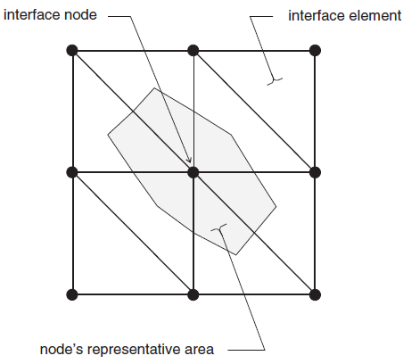
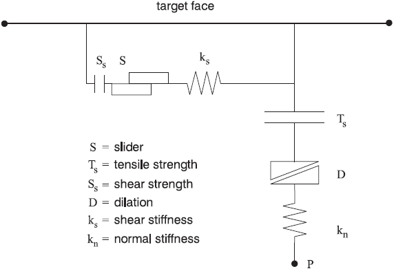

公式
FLAC3D 将接触面表示为三角形单元（接触面单元）的集合， 每个单元由三个节点（接触面节点）定义。接触面单元可在空间中的任意位置创建。 通常，接触面单元附着到网格单元表面面； 每个四边形网格单元面定义两个三角形接触面单元。随后在每个接触面单元顶点自动创建接触面节点。 当另一网格表面与某接触面单元接触时，接触在接触面节点处被检测到， 并由法向刚度、剪切刚度和滑动性质来表征。
每个接触面单元按加权方式将其面积分配到其节点。 每个接触面节点都有一个相关的代表面积。因此整个接触面被划分为若干活动接触面节点，代表接触面的总面积。 图 1（Figure 1） 说明了接触面单元与接触面节点之间的关系，以及单个节点相关的代表面积。

图 1：代表面积向接触面节点的分配。
需要注意的是，FLAC3D 中的接触面是单侧的。（这与二维 FLAC（Itasca 2011）中双侧接触面的公式表述不同。）可以把 FLAC3D 的接触面想象为包覆在所需表面上的“收缩膜”，使该表面对其可能接触的任何其他面的相互贯入变得敏感。
基本接触关系定义在接触面节点与网格单元表面面之间，后者也称为目标面。接触面力的法向方向由目标面的方向确定。
在每个时步中，对每个接触面节点及其接触的目标面计算绝对法向贯入量和相对剪切速度。
随后接触面本构模型使用这两个值计算法向力和剪力矢量。该本构模型由线性 Coulomb 抗剪强度准则（用于限制作用于接触面节点的剪力）、法向刚度和剪切刚度、抗拉黏结强度和抗剪黏结强度，以及剪胀角（在达到抗剪强度极限后使目标面上的有效法向力增加）来定义。
默认情况下，接触面有效应力计算中采用孔隙压力。该选项可使用 zone interface effective 命令通过设置 effective = 开启关闭（on/off） 来激活/停用。
图 2（Figure 2） 说明了在接触面节点（P）处起作用的本构模型各分量：

图 2：黏结接触面本构模型的各分量。
描述接触面弹性响应的法向力和剪力在计算时刻 \((t + \Delta t)\) 由以下关系确定
| 其中： | \(F_n^{(t + \Delta t)}\) | 为时刻 \((t + \Delta t)\) 的法向力 [力]； |
| \(F_{si}^{(t + \Delta t)}\) | 为时刻 \((t + \Delta t)\) 的剪力矢量 [力]； | |
| \(u_n\) | 为接触面节点贯入目标面的绝对法向贯入量 [位移]； | |
| \(\Delta u_{si}\) | 为相对剪切位移增量矢量 [位移]； | |
| \(\sigma_n\) | 为因接触面应力初始化而增加的法向应力 [力/位移]； | |
| \(k_n\) | 为法向刚度 [应力/位移]； | |
| \(k_s\) | 为剪切刚度 [应力/位移]； | |
| \(\sigma_{si}\) | 为因接触面应力初始化而产生的附加剪应力矢量；以及 | |
| \(A\) | 为接触面节点相关的代表面积 [长度2]。 |
接触面的非弹性逻辑按以下方式工作：
黏结接触面——如果应力保持在黏结强度以下，接触面保持弹性； 既有抗剪黏结强度，也有抗拉黏结强度。 法向黏结强度使用 tension 接触面性质关键字设置。 命令
zone interface nodeproperty shear-bond-ratio = 子步（sbr） 将抗剪黏结强度设为法向黏结强度的 子步（sbr） 倍。 property shear-bond-ratio 的默认值（若未给出）为 100.0。 如果剪应力超过抗剪强度，或拉伸有效法向应力超过法向强度，黏结即破坏。 请注意，仅给出 property shear-bond-ratio 并不会使黏结建立——还必须设置抗拉黏结强度。黏结状态下滑动——默认情况下，完整黏结会阻止所有屈服行为（滑动和分离）。 有一个可选的性质开关（bonded-slip），当黏结完整时仅阻止分离 （但允许剪切屈服，其受摩擦和黏聚力参数控制，并以 \((F_n)\) 作为法向力）。 允许/禁止黏结接触面段滑动的命令是
zone interface node，通过设置 bonded-slip 开启（on） 或 关闭（off）。bonded-slip 的默认状态（若未给出）为 关闭（off）。
Coulomb 滑动——黏结要么完整，要么已破坏。 如果已破坏，则接触面段的行为由摩擦和黏聚力（当然还有刚度）决定。 如果未设置黏结强度（为零），这就是默认行为。 已破坏的黏结段不能承受有效拉力 （当孔隙压力较大时，在法向压力作用下可能出现这种情况）。 如果有效法向力为拉力或零，则（对于未黏结的段）剪力为零。
Coulomb 抗剪强度准则通过以下关系限制剪力
其中：
\(c\) 为沿接触面的黏聚力 [应力]；
\(phi\) 为接触面表面的摩擦角 [度]；以及
\(p\) 为孔隙压力（由目标面插值得到），前提是未对该接触面给出关键字 effective = 关闭（off）。
如果满足该准则（即 \(\vert F_s \vert \ge F_{\rm smax}\)）， 则假定发生滑动，且 \(\vert F_s \vert = F_{\rm smax}\)， 同时保持剪力的方向不变。
在滑动过程中，剪切位移可能使节理上的有效法向应力增加，其关系为
其中：
\(\psi\) 为接触面表面的剪胀角 [度]；以及
\(|Fs|_o\) 为进行前述修正之前的剪力大小。
在打印输出中（见 单元界面节点列表（zone interface node list） 命令），tension 的值表示黏结是完整还是已破坏（或未设置）——分别为非零或零。
在接触面节点处计算的法向力和剪力以大小相等、方向相反的方式分配到目标面和接触面节点所连接的面（宿主面）两者上。使用权重函数将力分配到每个面上的网格点上。为保持数值稳定，接触面刚度被加到接触面两侧网格点上累积的刚度中。
接触面接触仅在接触面节点处被检测，接触力也仅在接触面节点处传递。与某个节点相关的应力状态假定均匀分布在该节点的整个代表面积上。接触面性质与每个节点相关联；性质可以因节点而异。
默认情况下，接触面计算中通过将有效应力作为滑动条件的基础来考虑孔隙压力的影响。（接触面孔隙压力由目标面插值得到。）这适用于 配置流体计算模式（model configure fluid） 模式，或在使用 zone water 或 单元网格点初始化孔隙压力（zone gridpoint initialize pore-pressure） 命令指定孔隙压力而未指定 配置流体计算模式（model configure fluid） 的情况。用户可以使用 zone interface effective 命令并通过设置 effective 开启（on） 或 关闭（off） 来切换接触面 s 的选项。在 FLAC3D 逻辑中，默认情况下流体流动（饱和或非饱和）会穿过接触面，前提是该特定接触面未使用接触面关键字 maximum-edge。可使用 zone interface permeability 命令并通过设置 effective 开启（on） 或 关闭（off） 来停用/重新激活接触面 s 的可渗透选项。请注意，如果在 zone interface element 命令之后使用关键字 maximum-edge，且某特定接触面的 permeability 为 开启（on），则会发出警告，告知用户该接触面将被视为对流体流动不透水。（请注意，仅为进行流体流动计算，也必须存在力学模型。此外，应使用 执行计算时步（model cycle） 0 命令并配合 模型力学活动命令（model mechanical active） 开启（on） 来初始化用于在接触面上传递流体流动信息的权重因子。）不计算垂直于节理的压力降，也不计算法向位移对孔隙压力的影响。
此外，流体沿接触面的流动未被模拟。
| 这些内容对您有帮助吗？… 版权与免责声明 |
FLAC3D © 2019, Itasca | 原文更新于 2020 年 10 月 8 日 |